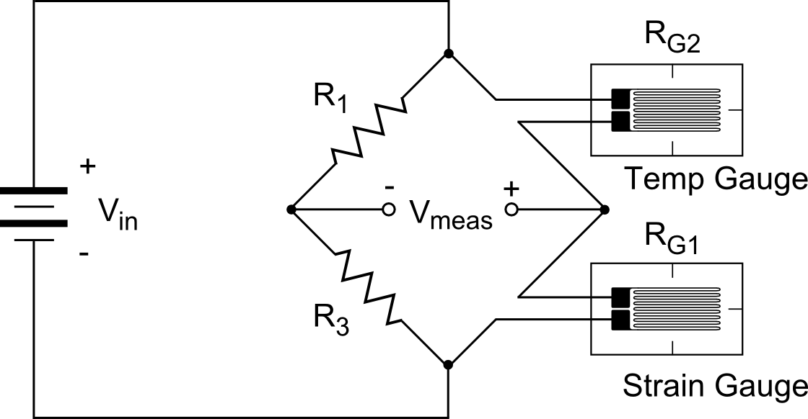
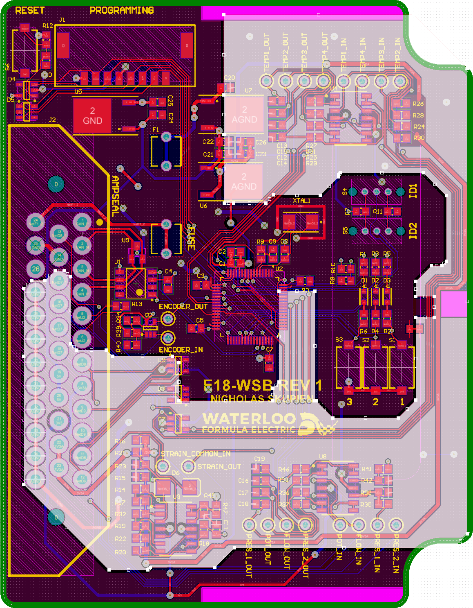

Wheel Sensor Boards
Portfolio
When I first joined the Waterloo Formula Electric car team, I was tasked with designing a board that could interface with a set of 4 reccuring sensors near each tire of the car. Additionally, The suspension team was looking to get quantitative data on their new suspension design.
The wheel sensor boards measure numerous analog signals like suspension force, tempuratures, coolant pressure and suspension position. An outline of the progress to design the PCB is written below. Additionally, I have linked the schematic file here
I began by looking into strain gages, an arrangement of gage grids (a foil pattern running in one axis) that varies resistance with strain. These can be mounted on an object that is under stress to measure the strain.
A tee rosette strain gage arrangement is shown below

During my research, I came across different sources of error in the gages. One of particular interest is heat. As the external tempurature changes, the resistance of the material in the gage also changes. To overcome this, I used an arrangement of two gage grids positioned perpendicularly to each other, called a tee rosette. By positioning the arrangement with one gage grid running in the principal stress direction, the other grid should not be effected by strain on the material.
To interface with the strain gages, a half-wheatstone-bridge configuration is used that can compensate for the tempurature change, and then an instumentation amplifier increases the gain of the signal.
A half-wheatstone-bridge credit to http://www.continuummechanics.org/straingauges.html
I then created a schematic with the strain gage interface circuit (among other circuits that interface with tempurature sensors, pressure sensors, potentiometers and an encoder). I used an STM32 microcontroller to read and interpret the signals and send a digital conversion over the CAN bus (A node based network) to the rest of the car.
To provide ground to all the components could be as easy as putting a ground layer and connecting everything to that one source. This creates an issue however with the analog components. For instance, an analog component is very sucseptable to noise. Putting analog and digitial loads on one source can induce noise on the analog compnents from the digital loads (the nature of digital components is that they switch from high to low, creating ripples in the ground source). To reduce this, the ground plane was split into two. One plane connects to analog components, and the other to digital. You can see this on the image below.
The analog ground runs from the voltage regulator, down to each of the analog components, to the connector and then connects to digital ground. The connection point is made small to reduce noise transfer.
This page is in progress